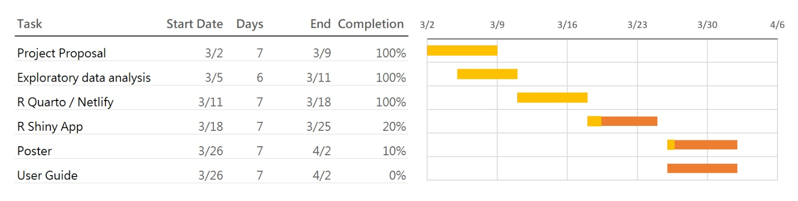

COFINFAD: Colombian Fintech Financial Analysis
1 Project Motivation & Objective
The Colombian fintech sector has experienced rapid growth, reaching nearly 400 companies by 2024. Despite this expansion, understanding the underlying drivers of customer satisfaction and financial engagement remains a significant challenge.
1.1 Motivation
Most fintech analyses focus on surface-level reporting such as total transaction volume or average values. However, these metrics do not explain why customers behave differently across segments.
Fintech users are highly heterogeneous. For example:
- Some users exhibit high transaction frequency but low financial value
- Others contribute significantly to total transaction volume but engage less frequently
- Certain groups may be highly digitally engaged but not financially active
Traditional analysis methods are limited in capturing these behavioural differences.
1.2 Objective
The objective of this project is to understand the behaviours behind customer transactions and how socio-demographic factors—such as age, income, and education—affect financial activity within the Colombian fintech ecosystem.
Specifically, the project aims to:
- Identify the key drivers of customer transaction behaviour
- Understand how demographic groups influence financial activity
- Segment customers based on behavioural and engagement characteristics
- Develop predictive models to estimate customer behaviour
- Design a visual analytics application to support interactive exploration
2 Data Overview: COFINFAD Dataset
The COFINFAD dataset captures the transition from traditional cash-based behaviour to a digital-first financial ecosystem.
2.1 Data Structure
The dataset consists of two main components:
Customer-Level Dataset (48,723 records)
Contains demographic, behavioural, engagement, and satisfaction attributesTransaction-Level Dataset (3.1 million records)
Contains detailed transaction information such as:- Transaction amount
- Transaction date
- Transaction type
- Transaction amount
Both datasets are linked through a common identifier: customer_id.
2.2 Key Variable Categories
| Category | Variables | Purpose |
|---|---|---|
| Demographics | Age, Income, Education, Household Size | Customer segmentation |
| Engagement | App logins, Feature usage, Active products | Digital behaviour |
| Financial | Transaction count, Avg value, Total volume | Financial activity |
| Sentiment | Satisfaction score, NPS score | Customer experience |
3 Analytical Framework (Integrated Approach)
The project adopts a three-stage analytical framework combining exploratory analysis, customer segmentation, and predictive modelling.
3.1 Exploratory & Confirmatory Analysis (EDA & CDA)
The first stage focuses on identifying relationships between socio-demographic variables and financial behaviour.
Key behavioural indicators include:
- Transaction count (
tx_count)
- Average transaction value (
avg_tx_value)
Due to the skewed nature of financial data, non-parametric statistical methods are used. Visual analytics techniques such as distribution plots, boxplots, and faceted comparisons are applied to explore how different demographic groups influence transaction behaviour.
This stage provides the foundational understanding of behavioural patterns across the customer base.
3.2 Customer Segmentation (K-Means Clustering)
The second stage applies K-Means clustering (k = 4) to group customers based on behavioural characteristics.
Clustering is performed using variables from three dimensions:
3.2.1 Transaction Behaviour
- Transaction count
- Average transaction value
- Transaction frequency
3.2.2 Digital Engagement
- App login frequency
- Feature usage diversity
- Active products
3.2.3 Customer Value & Risk
- Satisfaction score
- Churn probability
- Customer lifetime value
This approach identifies distinct customer segments such as:
- High-value customers
- Digitally engaged users
- Moderate activity users
- Low engagement segments
These clusters provide a structured way to interpret customer behaviour at scale.
3.3 Predictive Modelling
The final stage extends the analysis by developing predictive models to estimate key customer outcomes.
3.3.1 Customer Satisfaction Prediction (Supporting Analysis)
- Target variable: satisfaction_score
- Models used:
- Linear Regression
- Decision Tree
- Random Forest
- Linear Regression
This component evaluates how demographic, behavioural, and engagement variables influence customer experience.
However, the results show relatively low explanatory power, indicating that customer satisfaction is influenced by factors not fully captured in the dataset.
3.3.2 2. Transaction Behaviour Prediction (Primary Focus)
- Target variable: avg_daily_transactions (log-transformed)
- Models used:
- Linear Regression
- Decision Tree
- Random Forest
- Linear Regression
The target variable exhibits strong right-skewness. To address this, a logarithmic transformation (log1p) is applied.
This modelling component focuses on financial activity, which is more directly aligned with the project objective.
Among the models, Random Forest demonstrates the best predictive performance, indicating that non-linear relationships play an important role in explaining transaction behaviour.
3.4 Integrated Insight
By combining:
- Statistical analysis (EDA/CDA)
- Behavioural segmentation (Clustering)
- Predictive modelling
the project provides a comprehensive understanding of:
- Why customers behave differently
- How customer behaviour can be predicted
- Which factors drive financial activity in fintech platforms
4 4. Proposed Visual Analytics Application
The proposed Shiny application will consist of three main modules:
4.1 Exploratory Analysis Module
- Interactive filtering by demographic variables
- Distribution and comparison visualisations
- Correlation analysis between key variables
4.2 Customer Segmentation Module
- Visualization of customer clusters
- Cluster comparison dashboards
- Profiling of different customer segments
4.3 Predictive Analytics Module
- Model performance comparison
- Feature importance visualization
- Predicted vs actual analysis
- Insights into key drivers of behaviour
5 Project Timeline and Work Allocation

5.1 Team Responsibilities
- EDA & CDA Module – Ng Meng Ye
- Clustering Module – Chandru Kolanchiyappan
- Predictive Modelling Module – Gautamgovan Elangovan
6 6. Expected Value
This project provides:
- A deeper understanding of customer financial behaviour
- Identification of key drivers of transaction activity
- Data-driven insights for fintech decision-making
- A scalable visual analytics framework for future applications
The integration of statistical analysis, clustering, and predictive modelling ensures that both behavioural patterns and predictive insights are captured effectively.